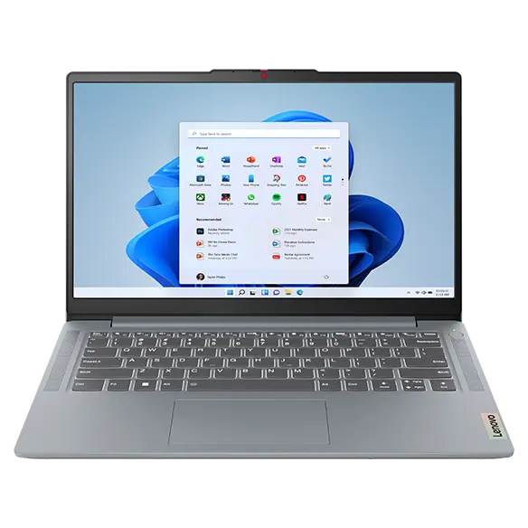
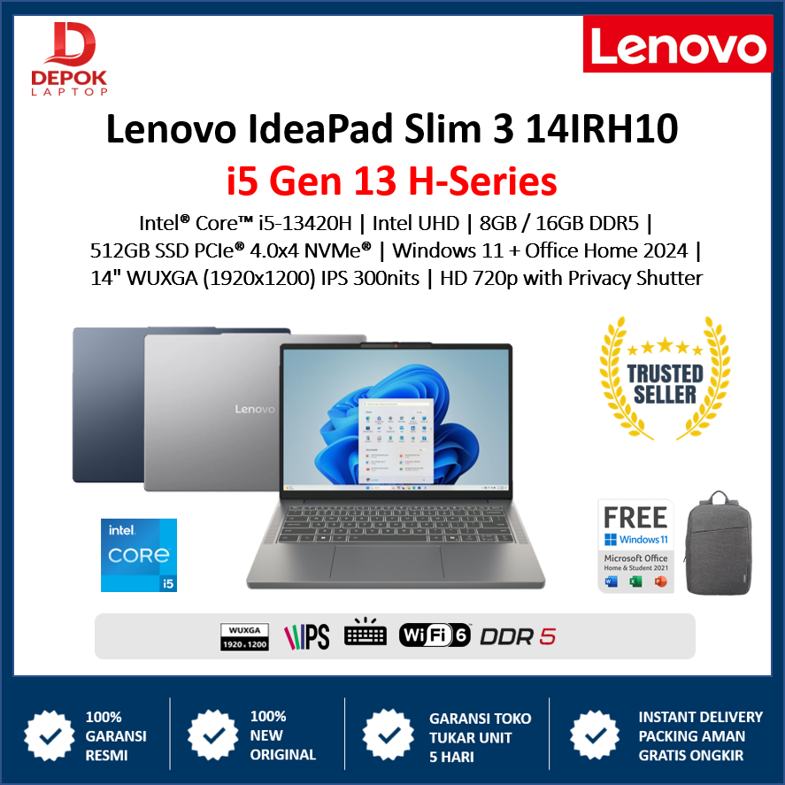
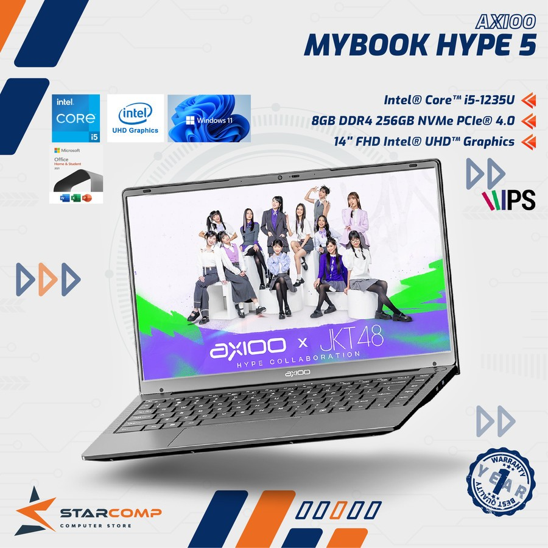
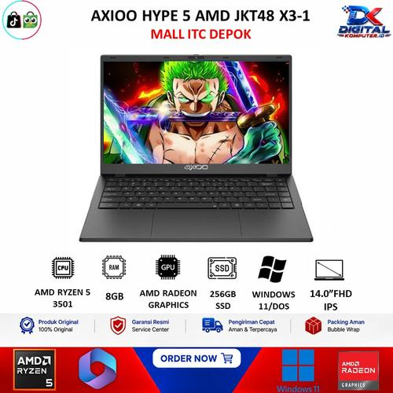
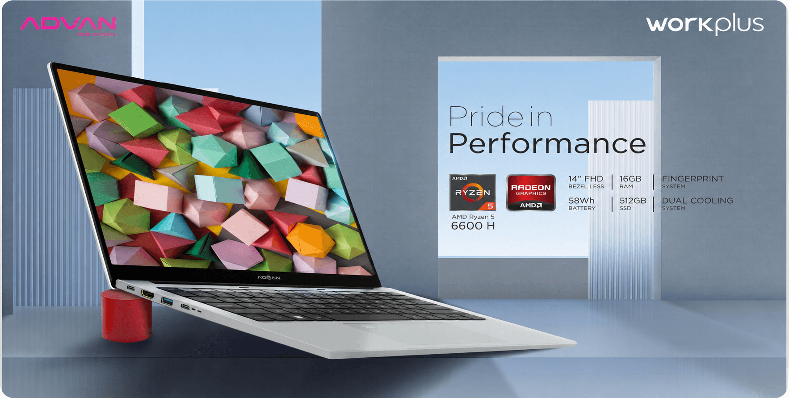
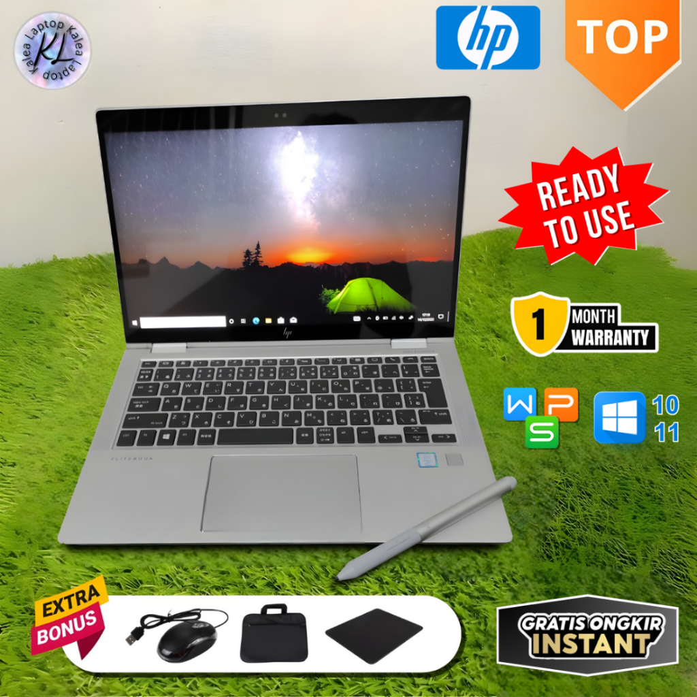
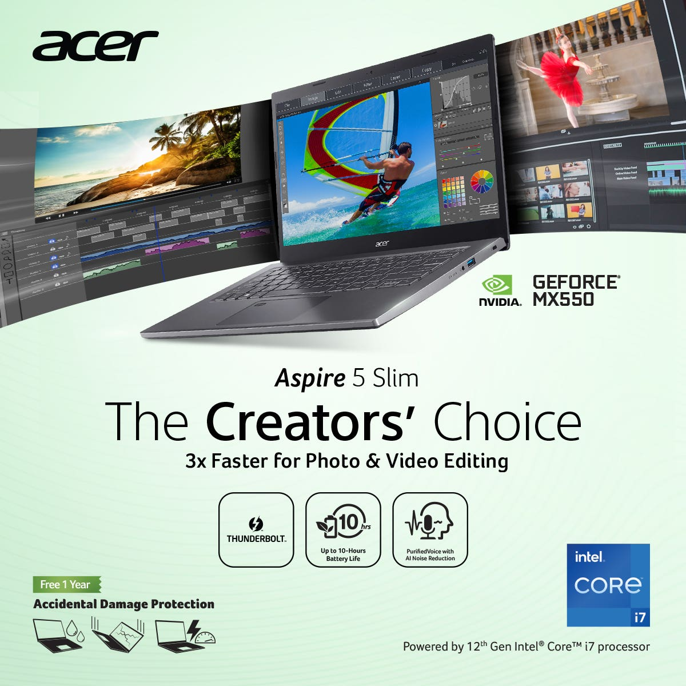
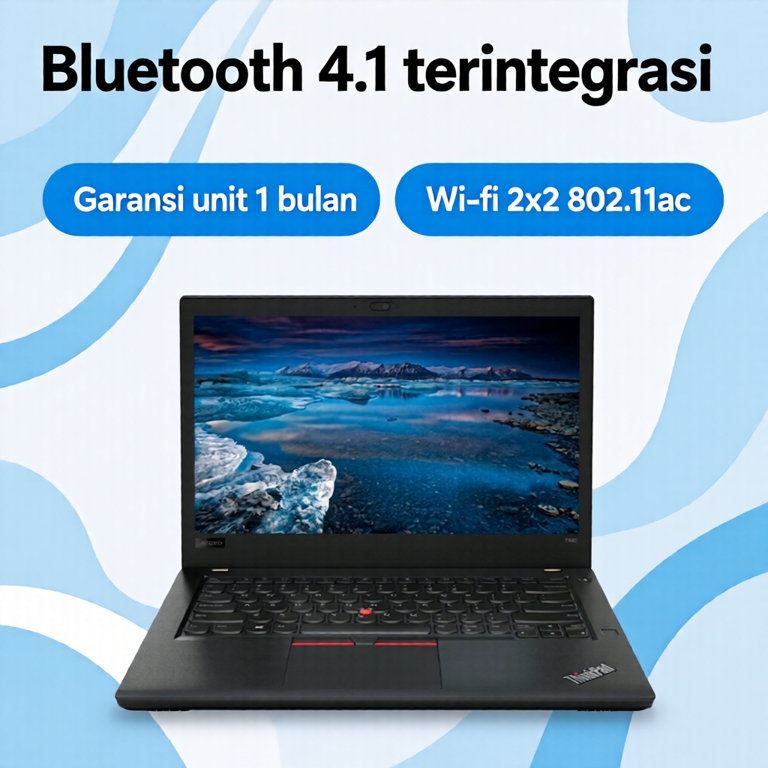
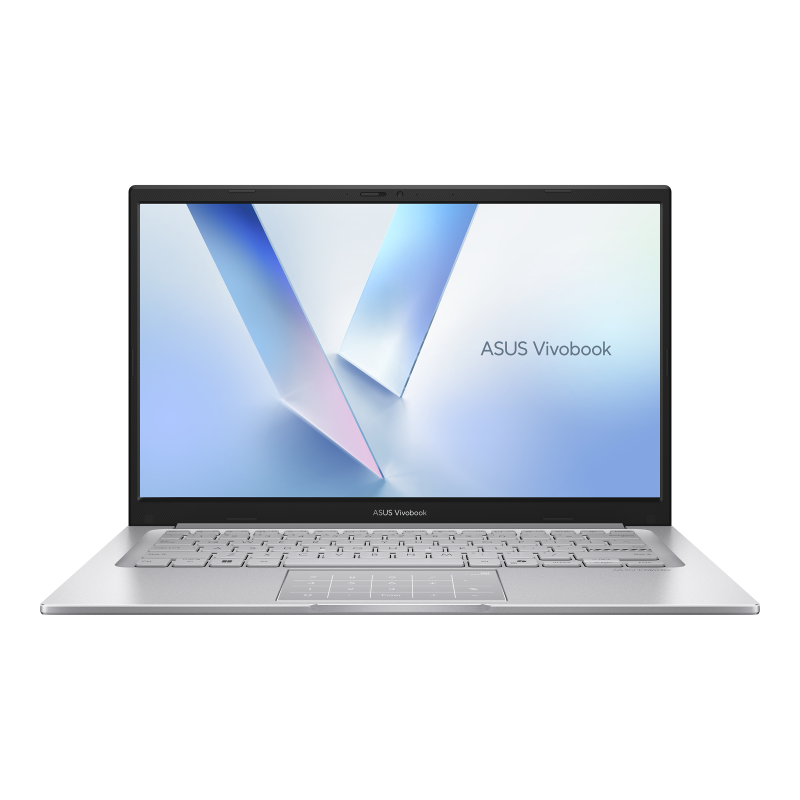
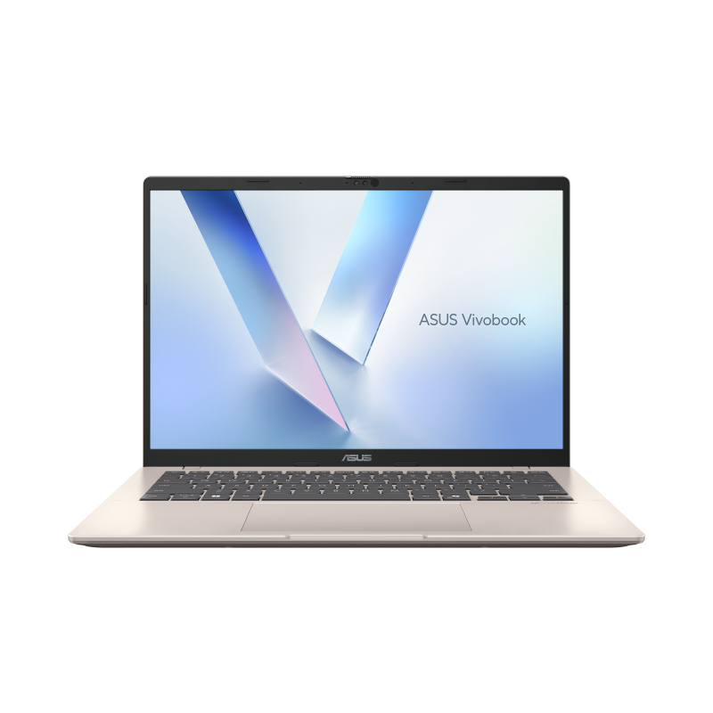

Mata Kuliah: Konsep Teknologi Informasi | Program Studi D4 Teknik Informatika
Politeknik Elektronika Negeri Surabaya (PENS) | Dosen Pengampu: Dr. Iwan Syarif, S.Kom., M.Kom.
Penyusun: Rochmad Djojo Oktabianto (NRP: 3126600126) | Batas Anggaran: Di Bawah Rp 10.000.000
Link Video Presentasi (YouTube): https://youtu.be/wuKABOQ77x4
Link Backup Cloud (Google Drive): https://drive.google.com/drive/folders/1AlInfs25r0rYZrh1xR6rmwWPJ95exLC5?usp=drive_link
Laporan teknis ini menyajikan identifikasi dan catatan spesifikasi lengkap dari 5 model laptop di rentang harga setara (Rp 8,2 s/d Rp 9,1 Juta). Seluruh data teknis dikompilasi dari dokumentasi basis data resmi produsen (Intel ARK, AMD Product Master, dan Lenovo PSREF) tanpa elemen visual tambahan, ditujukan sebagai bahan verifikasi teknis akademis.
| Parameter | Lenovo IdeaPad Slim 3 | Axioo Hype 5 AMD X6 | Advan WorkPlus | Acer Aspire 5 Slim | ASUS Vivobook 14 |
|---|---|---|---|---|---|
| Nomor Model | 14IAH8 (83EQ004DID) | H5A-6600 | 14-FHD+ / 6600H | A514-56M-534E | A1404VA-VIPS551 |
| Harga Pasar | Rp 8.599.000 | Rp 8.499.000 | Rp 7.999.000 | Rp 8.699.000 | Rp 8.799.000 |
| Prosesor | Intel Core i5-12450H | AMD Ryzen 5 6600H | AMD Ryzen 5 6600H | Intel Core i5-1335U | Intel Core i5-1335U |
| Core / Thread | 8 Core / 12 Thread | 6 Core / 12 Thread | 6 Core / 12 Thread | 10 Core / 12 Thread | 10 Core / 12 Thread |
| TDP Prosesor | 45W (Turbo 95W) | 45W (cTDP 35-54W) | 45W (cTDP 35-54W) | 15W (Turbo 55W) | 15W (Turbo 55W) |
| CPU Cache L3 | 12 MB Smart Cache | 16 MB Monolithic | 16 MB Monolithic | 12 MB Smart Cache | 12 MB Smart Cache |
| RAM Bawaan | 16 GB LPDDR5 4800MHz | 16 GB DDR5 4800MHz | 16 GB LPDDR5 6400MHz | 16 GB LPDDR5 4800MHz | 16 GB DDR4 3200MHz |
| Slot Ekspansi RAM | Soldered (Tidak ada slot) | 2 Slot SODIMM (ke 64GB) | Soldered (Tidak ada slot) | Soldered (Tidak ada slot) | 1 Slot SODIMM Tersedia |
| Slot SSD M.2 | 1 Slot M.2 2242 | 2 Slot M.2 2280 NVMe | 2 Slot M.2 2280 NVMe | 1 Slot M.2 2280 NVMe | 1 Slot M.2 2280 NVMe |
| GPU | Intel UHD (64 EU) | Radeon 660M (RDNA 2) | Radeon 660M (RDNA 2) | Intel Iris Xe (80 EU) | Intel Iris Xe (80 EU) |
| Layar | 14" IPS FHD (16:9) | 14" IPS WUXGA (16:10) | 14" IPS FHD+ (16:10) | 14" IPS FHD (16:9) | 14" IPS FHD (16:9) |
| Port USB-C | Full Function (PD + DP) | Full Function (PD + DP) | 2x Full Function (100W) | Thunderbolt 4 (40Gbps) | USB-C 3.2 (Data Only) |
| Baterai | 47 Whr (~5,5 Jam) | 58 Whr (~6,5 Jam) | 58 Whr (~7 Jam) | 50 Whr (~8,5 Jam) | 42 Whr (~5,5 Jam) |
| Ketahanan Fisik | MIL-STD-810H Militer | Polikarbonat ABS | Full Metal Aluminium | Cover Aluminium | MIL-STD-810H Militer |
| Office Asli (OHS) | Ya (Permanen Seumur Hidup) | Tidak (Hanya Windows) | Tidak (Hanya Windows) | Ya (Permanen Seumur Hidup) | Ya (Permanen Seumur Hidup) |
| Cinebench R23 Multi | ~9.250 poin | ~9.820 poin | ~10.150 poin | ~8.120 poin | ~7.940 poin |


| Harga Pasar | Rp 8.599.000 (Garansi Resmi 2 Tahun Lenovo Indonesia) |
|---|---|
| Prosesor (CPU) | Intel Core i5-12450H (8 Core / 12 Thread, 4 P-core up to 4.4 GHz + 4 E-core up to 3.3 GHz) |
| Daya & Cache CPU | TDP Base 45W, Max Turbo 95W | Cache L1: 640 KB, L2: 7 MB, L3: 12 MB Intel Smart Cache |
| Memori (RAM) | 16 GB LPDDR5 4800 MHz Dual-Channel (Tersolder di motherboard / Non-upgradeable) |
| Penyimpanan | 512 GB SSD M.2 2242 PCIe 4.0 x4 NVMe (Tersedia 1 slot M.2) |
| Kartu Grafis (GPU) | Intel UHD Graphics for 12th Gen Processors (64 Execution Units, Shared Memory) |
| Layar & Visual | 14.0 inci IPS, Resolusi Full HD (1920 x 1080), 16:9, Anti-Glare, 300 nits, 45% NTSC, TÜV Low Blue Light |
| Port & Konektivitas | 1x USB-C 3.2 Gen 1 (Power Delivery & DisplayPort 1.2), 2x USB 3.2 Gen 1 Type-A, 1x HDMI 1.4b, 1x SD Card Reader, 1x Audio Jack 3.5mm |
| Jaringan Nirkabel | Wi-Fi 6 (802.11ax 2x2) + Bluetooth 5.1 |
| Baterai & Pengisian | 47 Whr Lithium-Polymer, Adaptor 65W, Dukungan Rapid Charge Boost (15 menit cas untuk 2 jam pakai) |
| Konstruksi & Bobot | Polikarbonat teruji standar militer MIL-STD-810H | Berat: 1,37 kg | Tebal: 17,9 mm |
| Sistem Operasi | Windows 11 Home 64-bit Original + Microsoft Office Home & Student 2021 Asli Permanen |


| Harga Pasar | Rp 8.499.000 (Garansi Resmi 1 Tahun Axioo Indonesia + Axioo Care ADP) |
|---|---|
| Prosesor (CPU) | AMD Ryzen 5 6600H (6 Core / 12 Thread, Base 3.3 GHz, Max Boost up to 4.5 GHz, Zen 3+, 6nm TSMC) |
| Daya & Cache CPU | TDP 45W (cTDP 35-54W) | Cache L1: 384 KB, L2: 3 MB, L3: 16 MB Monolithic CCX |
| Memori (RAM) | 16 GB DDR5 4800 MHz (Menggunakan 2 Slot SODIMM Dual-Channel, Fully Upgradeable s/d 64 GB) |
| Penyimpanan | 512 GB SSD M.2 2280 NVMe PCIe Gen 3x4 (Tersedia 2 slot M.2 NVMe aktif) |
| Kartu Grafis (GPU) | AMD Radeon 660M (Arsitektur RDNA 2, 6 Compute Units, Clock 1900 MHz, Shared VRAM) |
| Layar & Visual | 14.0 inci IPS, Resolusi WUXGA (1920 x 1200), Rasio 16:10, Anti-Glare, 300 nits, 45% NTSC |
| Port & Konektivitas | 1x USB 3.2 Gen 1 Type-C (Full Function: Data, PD Charging, DisplayPort Out), 2x USB 3.2 Gen 1 Type-A, 1x USB 2.0, 1x HDMI, 1x MicroSD Slot, 1x Audio Jack |
| Jaringan Nirkabel | Wi-Fi 6 (802.11ax) + Bluetooth 5.2 |
| Baterai & Pengisian | 58 Whr Lithium-Polymer, Adaptor 65W (Mendukung pengisian daya via USB-C Power Delivery) |
| Konstruksi & Bobot | Material bodi polikarbonat ABS | Engsel 180° | Berat: 1,42 kg | Tebal: 17,8 mm |
| Sistem Operasi | Windows 11 Home 64-bit Original (Tanpa paket lisensi Microsoft Office permanen) |


| Harga Pasar | Rp 7.999.000 (Garansi Resmi 1 Tahun Advan Indonesia) |
|---|---|
| Prosesor (CPU) | AMD Ryzen 5 6600H (6 Core / 12 Thread, Base 3.3 GHz, Max Boost 4.5 GHz, Zen 3+, 6nm) |
| Daya & Cache CPU | TDP 45W | Cache L1: 384 KB, L2: 3 MB, L3: 16 MB Monolithic Shared Cache |
| Memori (RAM) | 16 GB LPDDR5 6400 MHz Dual-Channel 128-bit (Tersolder di motherboard / Non-upgradeable) |
| Penyimpanan | 512 GB SSD M.2 2280 NVMe PCIe Gen 3x4 (Tersedia 2 slot M.2 NVMe) |
| Kartu Grafis (GPU) | AMD Radeon 660M (Arsitektur RDNA 2, 6 Compute Units, Clock 1900 MHz) |
| Layar & Visual | 14.0 inci IPS, Resolusi Full HD+ (1920 x 1200), Rasio 16:10, Anti-Glare, 300 nits, 45% NTSC |
| Port & Konektivitas | 2x USB 3.2 Gen 1 Type-C (Keduanya Full Function: Data, PD 100W Charging, DisplayPort), 2x USB 3.2 Gen 1 Type-A, 1x HDMI 2.0, 1x MicroSD slot, 1x Audio Jack |
| Jaringan Nirkabel | Wi-Fi 6 (802.11ax) + Bluetooth 5.2 |
| Baterai & Pengisian | 58 Whr (5050 mAh), Adaptor GaN Type-C 100W Saku (Mendukung Fast Charging) |
| Konstruksi & Bobot | Material bodi Full Metal Aluminium Anodized | Sensor Sidik Jari | Berat: 1,33 kg | Tebal: 17,8 mm |
| Sistem Operasi | Windows 11 Home 64-bit Original (Tanpa paket lisensi Microsoft Office permanen) |


| Harga Pasar | Rp 8.699.000 (Garansi Resmi 2 Tahun Acer Indonesia + 1 Tahun Priority Care ADP) |
|---|---|
| Prosesor (CPU) | Intel Core i5-1335U Generasi ke-13 (10 Core: 2 P-core up to 4.6 GHz + 8 E-core up to 3.4 GHz, 12 Thread) |
| Daya & Cache CPU | TDP Base 15W, Max Turbo 55W | Cache L1: 960 KB, L2: 12 MB, L3: 12 MB Intel Smart Cache |
| Memori (RAM) | 16 GB LPDDR5 4800 MHz Dual-Channel (Tersolder di motherboard / Non-upgradeable) |
| Penyimpanan | 512 GB SSD M.2 2280 NVMe PCIe Gen 4x4 (Tersedia 1 slot M.2 NVMe) |
| Kartu Grafis (GPU) | Intel Iris Xe Graphics (80 Execution Units, Shared VRAM) |
| Layar & Visual | 14.0 inci IPS, Resolusi Full HD (1920 x 1080), 16:9, Acer ComfyView Matte, 250 nits, 45% NTSC |
| Port & Konektivitas | 1x Thunderbolt 4 / USB4 Type-C (40 Gbps, Power Delivery, DisplayPort), 2x USB 3.2 Gen 1 Type-A, 1x HDMI 2.1, 1x Audio Jack |
| Jaringan Nirkabel | Wi-Fi 6E (Intel AX211, Pita 2.4 GHz, 5 GHz, dan 6 GHz) + Bluetooth 5.3 |
| Baterai & Pengisian | 50 Whr Lithium-Ion, Adaptor 65W | Daya tahan nyata mencapai 8 hingga 8,5 jam |
| Konstruksi & Bobot | Top cover aluminium metal, sasis polikarbonat | Pendingin TwinAir | Berat: 1,45 kg | Tebal: 17,9 mm |
| Sistem Operasi | Windows 11 Home 64-bit Original + Microsoft Office Home & Student 2021 Asli Permanen |


| Harga Pasar | Rp 8.799.000 (Garansi Resmi 2 Tahun ASUS Global) |
|---|---|
| Prosesor (CPU) | Intel Core i5-1335U Generasi ke-13 (10 Core: 2 P-core up to 4.6 GHz + 8 E-core up to 3.4 GHz, 12 Thread) |
| Daya & Cache CPU | TDP Base 15W, Max Turbo 55W | Cache L1: 960 KB, L2: 12 MB, L3: 12 MB Intel Smart Cache |
| Memori (RAM) | 16 GB DDR4 3200 MHz (Konfigurasi: 8GB Onboard + 1 Slot SODIMM 8GB, Upgradeable hingga 24GB) |
| Penyimpanan | 512 GB SSD M.2 2280 NVMe PCIe 4.0 x4 (Tersedia 1 slot M.2 NVMe) |
| Kartu Grafis (GPU) | Intel Iris Xe Graphics (80 Execution Units, Shared VRAM) |
| Layar & Visual | 14.0 inci IPS-Level, Resolusi Full HD (1920 x 1080), 16:9, Anti-Glare, 250 nits, 45% NTSC |
| Port & Konektivitas | 1x USB 3.2 Gen 1 Type-C (Data Only), 2x USB 3.2 Gen 1 Type-A, 1x USB 2.0, 1x HDMI 1.4, 1x Audio Jack |
| Jaringan Nirkabel | Wi-Fi 6E (802.11ax 2.4/5/6 GHz) + Bluetooth 5.3 |
| Baterai & Pengisian | 42 Whr Lithium-Ion 3-cell, Adaptor 45W / 65W (Fast Charging 60% dalam 49 menit) |
| Konstruksi & Bobot | Bodi polikarbonat berstandar militer MIL-STD-810H | Lapisan Antimicrobial Guard | Berat: 1,38 kg |
| Sistem Operasi | Windows 11 Home 64-bit Original + Microsoft Office Home & Student 2021 Asli Permanen |